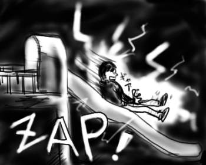

生茶はいいけど、あまちゃづる茶はどこいったん？(挨拶)
御無沙汰でした。チェックしていただいている方には大変申し訳ないです。とりあえず更新が滞ったらindexが変わる前触れと思ってくれるといいです。贋作indexサイトへようこそ。一応、自分で書いてますよ。西海岸会議(単なる飲み会)で注意されたので、なんとか更新頻度を維持したいです。
そろそろ春で乾燥の季節も終わりですが、乾燥するとやはり静電気による被害が甚大です。
かくいう私もいつの間にやら帯電体質に改造されており、コンビニのホット缶棚でバチン！続いてあったか〜い缶を掴んでバチン！会社の実験室で作業のたびにバチン！ノートパソコンのキーボードでバチン！FDD受け渡してバチン！手をつないでバチン！など生活のあらゆるシーンでバチン！と指から火花を散らせていたのですが、バチン対策のTipsとして手を水で濡らすというのが有効なのですよ、この電解質！でも、手を濡らそうとして蛇口から流れ出る水に手を入れてバチン！というのはいくらなんでもやりすぎではないでしょうか。水が痛いです、生命の母。
ある夜、飲んだ帰りに夜の公園を通りかかったところ、設置遊具のあまりの『マンモス遊具*1)』ぶりに心を奪われ、遊具フルコースを開始。ブランコで立ちこぎをして頭をぶつけたり、うんていで腕が引き千切れそうになったりで、本気で子供すげぇなぁと驚愕！小さいくせに高起動。驚くべき集積度。大人もダウンサイジングすべき。頭脳は今のままで昔にもどれたらなぁと頬杖ついて校庭眺めながらの授業中、あの娘のくしゃみが可愛いなぁと共学！などあらゆる事象が脳に浮かんでは消え、浮かんでは消えて、要は消えたんですけど(現実に)。というか電車の吊革タイプのうんてい、ありゃ無茶。フルコースもデザートの段階まで進み、もちろん最後はすべり台です、このアクリル板！
ナイロンパーカーとアクリル板。すべり降りるケツにバチン！バチン！痛い痛い！痛い！
夜の公園で、すべり台から滑り降りながらケツから放電。25歳。
子供って消磁器装備？

*1)私の通った小学校に設置されていた、ジャングルジム、すべり台、登り棒、うんてい(山形タイプと直線型の2種！)、ブランコ(板とタイヤの2種！)、ネット(よじ登りタイプ)、タイヤ塔(よじ登りタイプ)など、全てのフィーチャーが未来的なデザインに統合されたまさに夢の大型マシン！メリーゴーランド(傘を開いた形で、傘の部分が回転する。傘に掴まってただひたすらぶん回されるという大変危険な乗り物)が回転中に倒壊するという流血大惨事の後に設置された。血の洗礼とマンモス遊具の歪んだ力場がエフェクト力を与えてくれたのかもしれない(いらないのに)。